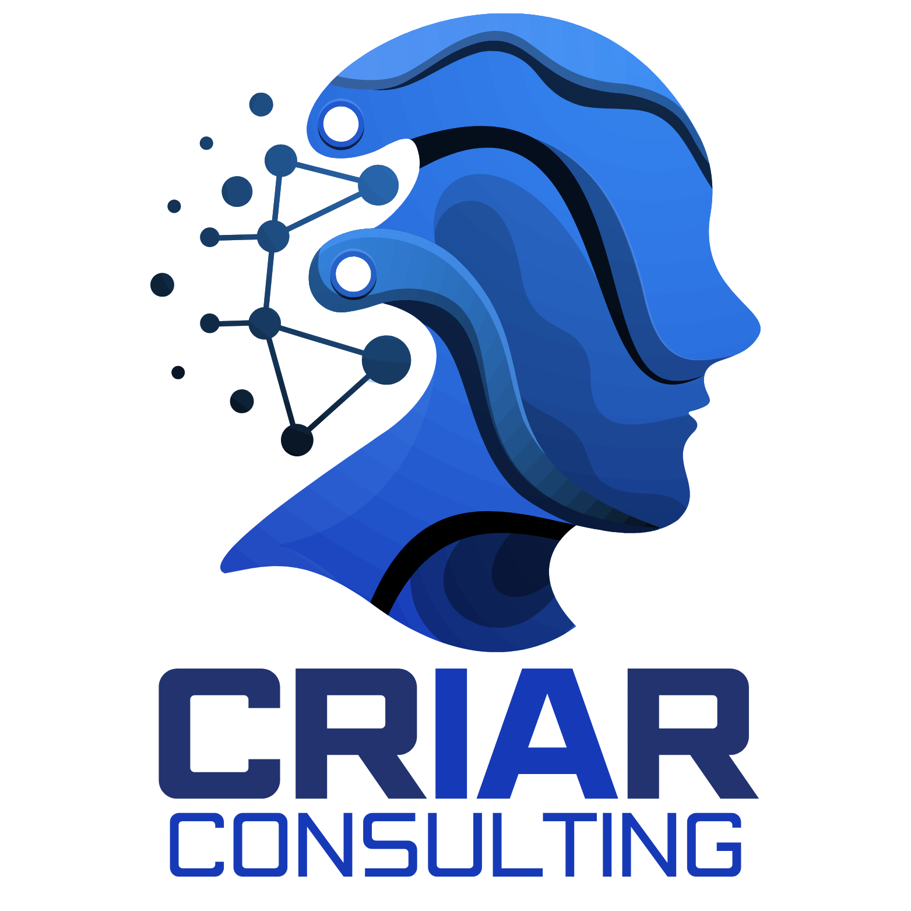

✓ Inteligência Privada & LGPD MédicaEste material foi concebido e curado pela CrIAr Consulting. Ele traduz as premissas de segurança global de dados para a rotina humanizada de Psicólogos, Terapeutas, Dentistas e Profissionais de Saúde. Nosso objetivo não é impor medo tecnológico, mas garantir que a inovação traga alívio e segurança para a gestão do seu consultório.
As orientações contidas neste material baseiam-se em conhecimentos de governança tecnológica. Elas devem ser interpretadas como suporte estrutural para a conformidade com a LGPD e conselhos de classe (CFP, CFM). Recomenda-se o acompanhamento conjunto do seu jurídico de confiança.
A medicina, a psicologia e o cuidado com a saúde humana estão passando por um de seus saltos mais bonitos de evolução. Com a popularização da Inteligência Artificial (como transcritores automáticos, assistentes de Vibe Coding e agendas inteligentes), o profissional moderno encontrou a chance de gastar menos tempo na burocracia e focar na vida que está à sua frente.
No entanto, à medida em que delegamos nossos áudios e a escrita dos nossos prontuários a assistentes virtuais terceiros, uma preocupação ética fundamental se acende: onde esses dados confidenciais vão dormir hoje à noite?
A inovação sem governança pode, acidentalmente, esbarrar em violações das normas do CFM ou CFP. Para o setor focado em cuidado humano, a tecnologia não pode ser uma caixa-preta. Este guia foi construído para pegar na sua mão e conduzir seu consultório à modernidade com o que há de mais rigoroso na proteção de dados (Privacy by Design).
A base da ética terapêutica é o "Sigilo das Informações". Na era dos papéis, trancar o arquivo num armário de metal era o suficiente. Na era digital, o armário de metal precisa se chamar "Criptografia de Ponta-a-Ponta".
A CrIAr Consulting aplica conceitos robustos e amigáveis para gerir a I.A., que se resumem em três passos:
Entenda que uma I.A. gratuita costuma pagar as contas lendo os seus textos para aprender a falar melhor no futuro. Se você transcreve a dor do seu paciente em uma plataforma sem o selo "Enterprise / Opt-out", essa dor pode estar sendo armazenada pelas Big Techs.
Solução Consultiva: Use apenas ferramentas que atestem via contrato que os seus dados "não treinam novos modelos".
Sabe a supervisão clínica para discutir seus casos? A tecnologia também pede supervisão. Precisamos compreender exatamente quem (qual aplicativo, secretário ou chatbot) tem acesso de leitura aos laudos.
Os erros éticos raramente acontecem porque a IA "saiu do controle". Eles acontecem porque quem a configurou ignorou o checklist de proteção cibernética.
Um conceito comum é o de alucinação — quando a I.A. relata um diagnóstico que soa perfeito, mas é ficional.
Para o desenvolvedor, isso é um bug. Para a área da Saúde, isso é um laudo cruzado perigoso. O rigor científico nos ensina: a máquina apenas resume; a responsabilidade de interpretar o afeto humano é sempre do clínico.
Muitos profissionais desconhecem que enviar uma foto de um diagnóstico a um robô no celular é considerado transferência de dados sanitários de alta sensibilidade.
Para sairmos da teoria, a CrIAr Consulting mapeou as 3 aplicações mais comuns da inteligência artificial pelos profissionais de saúde focados em Vibe Coding hoje, trazendo a solução técnica validada pela lei:
A Ação Comum: O profissional grava o áudio ou faz anotações rasuradas da sessão e as cola no ChatGPT pedindo para "resumir no formato padrão SOAP (Subjetivo, Objetivo, Avaliação, Plano)".
O Risco Oculto (Multa e Quebra Ética): No plano gratuito das I.A.s Globais, tudo que você posta alimenta a base de dados central. Seus dados treinam o modelo. O sigilo que o paciente confiou a você foi cedido a terceiros.
A Solução Segura CrIAr: Se não utilizar um modelo local executado 100% no seu notebook, instale protocolos de Desidentificação Cega (Substitua nomes por "Alfa", omita referências exatas de empresas/profissão) e ative a "Configuração Zero-Retention / Data Exclusion" no painel da I.A.
A Ação Comum: Tirar foto de um punhado de exames de laboratório físico e pedir para a I.A apontar variações anormais ou levantar hipóteses.
O Risco Oculto: Fotos carregam "Metadados de EXIF" (GPS que diz exatamente onde e a que horas a foto foi tirada) e contêm o nome do convênio, nome do paciente e logotipo central da clínica.
A Solução Segura CrIAr: Nunca insira dados de exames através de uploads de imagens se elas contêm dados PII (Personally Identifiable Information). Utilize a transcrição textual direta em abas que garantam que os dados fluem numa arquitetura B2B (HIPAA Compliance).
A Ação Comum: Contratar automações baratas para WhatsApp em que o robô de IA faz a pré-triagem do paciente conversando como um ser humano.
O Risco Oculto: Startups pequenas que intermedeiam isso retêm todo o histórico médico e as dores descritas pelo paciente numa "tabela na nuvem" de fácil acesso por qualquer atendente não licenciado.
A Solução Segura CrIAr: Ao contratar APIs e Robôs integradores, exija em contrato a cláusula ISO 27001 e a "Exclusão Rotineira de Dados": após o agendamento, as falas do paciente são deletadas do terminal do fornecedor temporário em até 72 horas.
Profissionais não deveriam precisar aprender sobre bancos de dados avançados. Possuir seu ecossistema digital auditado por consultorias de excelência — como uma chancelaria técnica — proporciona um fardo infinitamente menor nos seus ombros.
A CrIAr Consulting acredita solenemente que a segurança cibernética não é um fim em si mesmo, mas a ponte estrutural para alavancar carreiras na saúde.
Se precisar de um tradutor tecnológico para auditar suas ferramentas, entre em contato conosco.